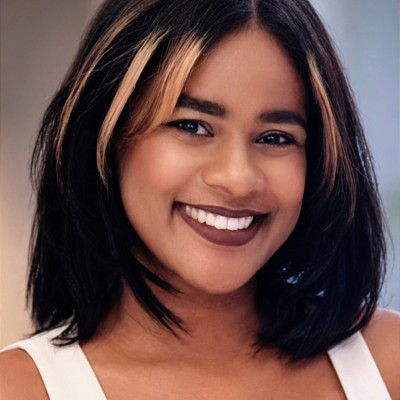
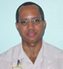

Meet the team
Our team brings together scientists based at the University of Manchester and Manchester Cancer Research Centre, clinicians at The Christie NHS Foundation Trust, and collaborators from the University of the West Indies, Mona and partner hospitals in Jamaica.
University of Manchester team

Prof. David Wedge
Principal Investigator
David is a Professor in Cancer Genomics and Data Science at The University of Manchester and is the principal investigator for this study. His work focuses on cancer evolution and understanding how genetic changes shape cancer development and progression.

Dr Aliah Hawari
Lead Researcher
Aliah is a Research Fellow and a Computational Biologist based at the University of Manchester and Manchester Cancer Research Centre. She studies how prostate cancer develops by analysing genetic changes in tumour samples.

Dr Ashwin Sachdeva
Consultant Urological Surgeon and Clinical Senior Lecturer in Urology.
Ashwin is a Consultant Urological Surgeon at The Christie NHS Foundation Trust and the clinical lead for this study.
University of the West Indies, Mona team

Dr Sasha Gay-Wright
Researcher
Sasha leads our Jamaican research cohort. She is an academic and cancer researcher specialising in prostate cancer biology and translational biomedical technologies. She also leads the Biomedical Engineering programme at UWI Mona, the only programme of its kind in the English-speaking Caribbean. Her work brings together research, education and collaboration, with a strong focus on mentoring the next generation of scientists and engineers and advancing research with both regional and global impact.

Prof. William Aiken
Consultant Urologist
Consultant Urologist, Head Division of Urology, Lecturer from The University of West Indies, Mona, Jamaica.

Dr. Kimberley Foster
Researcher
Kimberley is biotechnologist based at The University of West Indies, Mona Jamaica.